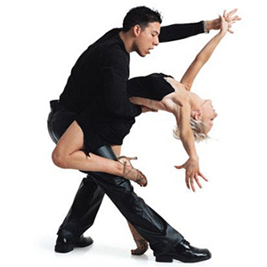
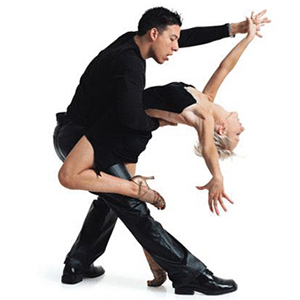

Istorija modernih igara
 

Igra - narodna, kultna ili umetnička - bila je od najranijih vremena najbliži saveznik muzike. Jedna i druga zasnovane na ritmu kao zajedničkoj komponenti, igra i muzika su veoma često, i u najrazličitijim prilikama, sarađivale ostvarujući ujedinjene oblike. Sjedinjavanja igre i muzike stvorila su se dva osnovna tipa igre: igre za gledanje i društvene igre. Prvi tip, proistekao iz kultnog obreda, dok je drugi ostao u posedu raznih socijalnih grupa i širokih narodnih slojeva i tokom vremena razdvojio na dve velike grupe: folklorne igre, i igre gradskog stanovništva.
Zabavne igre su težile ka dekorativnosti i složenosti, što je zahtevalo izvesnu uvežbanost i pojedinca i grupa koje su ih igrale. Međutim, paralelno sa opadanjem političkog uticaja aristokracije na tokove kulturnog života u gradovima, pojednostavile su se društvene igre i u koreografskom i u muzičkom smislu.
Po svojoj muzičkoj suštini društvene igre mogu da se nadovezuju na neki folklorni stil. Može se izgraditi i sopstveni stil, po ukusu gradskog čoveka. Vremenom, ulaze i izlaze iz mode oblici laganih, umereno brzih i brzih igara sa raznim nazivima.
Jovan Dučić o plesu
Ples nije za ceo svet, jer je ples ili umetnost ili je nakarada. Jer ritam je Bogom dan i urođen kao i sluh, a zato mogu igrati samo oni kojima je ritam već u krvi. Ples je pre svega stvar temperamenta. Većma poznate karakter jednog čoveka po tome kako igra, nego po tome kako misli i govori. Igrom se opiju duhovi većma nego li muzikom, jer je pokret viši i od zvuka, a opojniji i od stihova.
Čovek peva i kad je žalostan, ali igra samo kad je radostan. Nikad čovek ne zaigra u tuzi, kao što, naprotiv, u tuzi zasvira ili zapeva; jer nesreća oduzme telu njegov pokret, a pokretu njegov ritam.
Muzika je prilično stvar spola, kao i ples; svi muzikalni ljudi, a naročito žene, spolno su veoma uzbudljivi, a često i perverzni; jer muzika potresa nervni sistem i raspaljuje maštu.
Kod žene se po samom pokretu može poznati da li ima urođene čednosti, ili je moralno pokvarena, kao da li je gospodstvenog ili je neotmenog duha. Ima finih žena koje nose glavu kao najlepše ptice, kao što ima ljudi koji nose glavu kao vepar.
Samba
Samba se prvi puta pojavila u Evropi 1924. godine ali je pravi prodor doživela tek 1948. Samba je veseo ples pun ritma koji se posebno izražava u stilu koji je nešto različitiji od drugih latinoameričkih plesova.
Rumba
Rumba je vrsta plesa koji je glavni razvoj doživio na Kubi, a potiče iz 16. veka od crnih robova koji su dovedeni iz Afrike. Rumba je ime za više kubanskih plesova u paru, a prije svega znači zabavu, ples.
Cha-cha-cha
Cha-cha-cha je latinoamerički ples koji je nastao u Havani na Kubi 1950-ih i ubrzo postao jedan od omiljenijih plesova na takmičenjima u latino-americkim plesovima. Kubanska muzika je osvojio Severnu Ameriku i postao najomiljeniji ples.